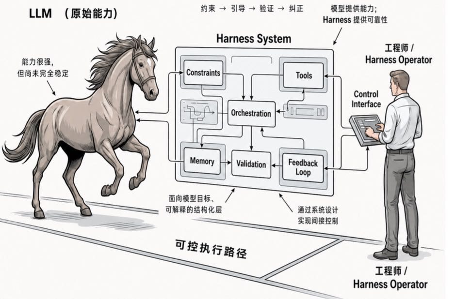
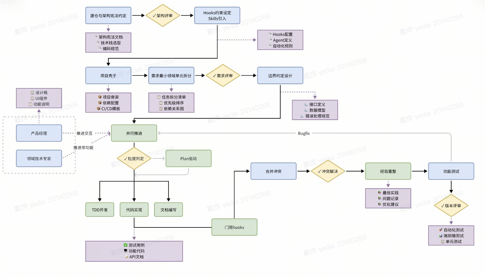

第一层 ：补全代码，提高个人输入效率
01
/45
ai-coding-harness.training
session.ts
01 const topic = "AI Coding -> Harness";
02 audience.role = ["商务", "售前"];
03 goal = diagnose(customer.maturity);
04 recommend(TRAE_2_0, enterprise_path);
Internal Enablement · AI Coding
从 AI Coding
到 Harness 工程
某团队 AI Coding 实践分享
分享人：泛互行业解决方案 - 戴烨
boot
$ prepare audience: business + pre-sales
$ scope: evolution / practice / recommendation
$ output: customer diagnostic playbook
02
/45
目录
01
AI Coding 与 Harness 工程的进化
建立趋势共识
02
某团队真实项目实践复盘
证明可落地
03
客户成熟度诊断与 TRAE 推荐
转成客户问诊
03
/45
开场
核心判断：从写代码工具到研发生产系统
AI Coding 的竞争焦点正在从“模型会不会写”转向“系统能不能交付”。
第二层 ：理解任务，拆解步骤，调用工具
第三层 ：进入工程环境，修改、运行、验证、修复
下一层 ：形成组织可复用的 Harness 能力
04
/45
01
趋势
AI Coding 趋势
从“会写代码”走向“能在工程系统里稳定交付”。
05
/45
趋势
客户眼中的 AI Coding：从补全到执行
客户对 AI Coding 的认知正在从“智能补全”升级到“任务执行”。
Before / Risk
停留在单点工具
- 过去：写一段函数、补一段代码、解释一段报错
- 现在：读需求、看工程、改文件、跑命令、修问题
After / Harness
进入可交付系统
- 客户关心点：不是炫技，而是节省时间、降低返工、缩短交付
- 售前表达：AI Coding 不是键盘插件，而是研发流程参与者
06
/45
趋势
Prompt Engineering：第一阶段是把需求说清楚
Prompt Engineering 的本质是需求表达优化，但它仍然高度依赖人。
人负责拆任务、补背景、给约束
模型负责生成答案、代码或建议
价值 ：把模糊需求变成更清晰的输入
局限 ：上下文断裂、结果难复用、验证仍靠人工
07
/45
趋势
Agent Loop：第二阶段是规划、行动、观察
Agent Loop 让模型从一次性回答进入持续迭代。
1
Plan
理解目标并拆解步骤
2
Act
调用工具、读取资料、执行命令
3
Observe
观察结果、日志、错误和反馈
4
Iterate
根据反馈调整下一步
08
/45
趋势
Coding Agent：第三阶段是进入真实工程环境
Coding Agent 的关键变化是能在真实仓库和运行环境中工作。
Coding Agent：第三阶段是进入真实工程环境
$ 读取代码结构、配置、文档和测试
$ 修改文件并保持上下文一致
$ 运行命令、查看日志、定位失败
$ 通过验证把“生成代码”变成“交付结果”
Coding Agent 的关键变化是能在真实仓库和运行环境中工作。
这一步让客户的期待发生变化：不是“给我一段代码”，而是“帮我把这个任务推进到可验证状态”。售前要把“验证”作为核心词讲出来。
09
/45
Claude Code 源码启发
从 Claude Code 源码看 Agent 如何工作
报告的核心判断：Claude Code 的本质不是聊天框，而是一个被 Harness 约束的 Agent Runtime。
报告原文把 Claude Code 定义为“工业级 Agent Runtime”。
引用： “The model is the agent. The code is the harness.”
翻译成业务语言：模型负责智能，代码负责把智能放进可运行、可观察、可治理的工程环境。
源码启发不是“照抄功能”，而是学习它如何把 Prompt、Context、Tool、Permission、Loop、Verification 组织成系统。
10
/45
Claude Code 源码启发
Claude Code 的启发：质量靠 Harness 兜住
报告给出的质量闭环是：生成、验证、审查、限制、回收反馈，再形成循环。
受限工具环境 ：工具不是越多越好，而是按边界开放
hooks / verifier ：把“改完能不能跑通”放进流程
自动审查 ：不信任单一环节，在关键节点挑战判断
可观测轨迹 ：消息、活动、输出、transcript 可追踪
报告原文总结：不是靠模型一次性生成高质量代码，而是靠“受限工具环境 + hooks/verifier + 自动审查 + 灰度发布 + 可观测任务轨迹”。
11
/45
趋势
共性能力：六件事决定能否落地
成熟 Coding Agent 共有六类工程能力。
01
Tools
能使用文件、终端、搜索、浏览器、接口等工具
02
Context
能组织任务、代码、历史和约束
03
Memory
能沉淀项目偏好、团队规则和复用经验
04
Permission
能控制可读、可写、可执行边界
05
Verification
能运行测试、检查结果、验证改动
06
Recovery
能从失败、冲突、误判中恢复
12
/45
趋势
Harness 工程：把原始能力变成可靠执行
LLM 提供原始能力，Harness 负责约束、引导、验证和纠正。

13
/45
趋势
Harness Engineering 定义：让 AI 变得可交付
Harness Engineering 是把 AI 能力转化为稳定交付能力的工程体系。
Harness Engineering 定义：让 AI
$ 目标 -> 可控、可用、可复用、可交付
$ 对象 -> 模型、工具、知识、流程、权限、评估
$ 方法 -> 把不确定的智能行为纳入工程约束
$ 结果 -> 从“个人会用 AI”走向“组织能驾驭 AI”
Harness Engineering 是把 AI 能力转化为稳定交付能力的工程体系。
Harness 可以理解为“给 AI 装上工作台、轨道、仪表盘和安全边界”。它不是替代模型，而是让模型在企业环境里更稳定地发挥。
14
/45
趋势
Harness 五大模块：工具、知识、观察、控制、评估
Harness 可以拆成五个客户容易理解的模块。
01
Tools
Agent 能做什么
02
Knowledge
Agent 知道什么
03
Observation
Agent 如何看见过程和结果
04
Control
企业如何设定边界和权限
05
Evaluation
如何判断结果是否可靠
15
/45
Agent
=
Model
+
Harness
企业级 Agent 不是模型本身，而是模型和 Harness 的组合。
没有 Harness ：能力强但不稳定
没有好模型 ：流程完整但智能不足
真正价值 ：两者相互放大
16
/45
趋势
Harness 壁垒：模型跃迁，工程沉淀
模型会持续跃迁，但 Harness 会形成组织连续沉淀。
Before / Risk
停留在单点工具
- 模型能力会快速升级，也会快速被追平
- 企业知识、流程、权限、验证标准难以复制
After / Harness
进入可交付系统
- 好的 Harness 能承接新模型红利
- 组织壁垒来自“把经验变成系统”
17
/45
趋势
企业客户意义：从个人效率到团队能力
企业客户真正需要的是团队级、可治理的研发能力提升。
Before / Risk
停留在单点工具
- 个人层：写得更快，查得更快
- 团队层：协作更顺，知识更可复用
After / Harness
进入可交付系统
- 交付层：验证更完整，返工更少
- 治理层：权限、审计、质量和风险可控
18
/45
趋势
小结
AI Coding 的下一站不是更会写代码，而是更稳定地产生结果。
01
Prompt 解决表达问题
02
Agent Loop 解决行动问题
03
Coding Agent 解决工程进入问题
04
Harness Engineering 解决企业落地问题
05
结论
客户要的是可交付的 AI 研发生产力
19
/45
02
实践
该团队 claw-like 产品实践
该团队实践证明 Harness 不是概念，而是可以被工程化运行的机制。
20
/45
实践
该项目概况：桌面客户端与协作模式
实践发生在复杂工程环境中，而不是简单脚本场景。
场景 ：该团队围绕该桌面客户端开展复杂工程提效实践
任务类型 ：产品体验打磨、工程改造、问题修复、调试验证、协作流程优化
协作形态 ：一个核心人员同时协调多个 Agent，按任务粒度分工推进
工作闭环 ：需求拆解、执行推进、运行观察、验证收口、复盘沉淀
目标 ：探索从“个人使用 AI”到“该团队组织 AI 协作”的方法
21
/45
实践
该项目 Demo：从协作到产品推出
用一个真实演示，先看该项目如何从 AI 协作进入可交付状态。
AI Coding 的价值不只在“写得快”，而在该团队能否把需求、执行、验证和迭代组织成闭环。
22
/45
实践
挑战：该项目不会自动变简单
AI 加入研发后，难点从“会不会生成”转向“如何组织复杂性”。
交付窗口短 ：任务要被快速拆解和收敛
跨环境调试 ：问题可能出现在多个运行层
上下文切换重 ：人和 Agent 都容易丢失状态
质量稳定性 ：生成结果需要验证、回滚和复盘
协作摩擦 ：设计、代码、运行结果和验收标准容易不一致
23
/45
实践
该团队实践的篝火模式
围绕共同目标，把需求、设计、代码、验证和经验沉淀连接成可接力流程。

查看全图
24
/45
实践
方法论总览：把不确定行为纳入工程组织
该团队实践的核心方法是用工程机制包住 Agent 的不确定性。
1
用共享记忆降低上下文丢失
用共享记忆降低上下文丢失
2
用该项目从设计到代码的链路降低信息衰减
用该项目从设计到代码的链路降低信息衰减
3
用双向切换机制提升协作效率
用双向切换机制提升协作效率
4
用 Skills、外部工具和 Hooks 封装经验
用 Skills、外部工具和 Hooks 封装经验
5
用 ReAct 与验证闭环控制质量
用 ReAct 与验证闭环控制质量
25
/45
实践
记忆上下文共享：让任务状态可继承
共享记忆机制把“人脑里的进度”变成可交接的任务资产。
记忆上下文共享：让任务状态可继承
$ 任务导航 -> 明确当前目标、边界和下一步
$ 上下文记录 -> 保存关键决策、约束和已知问题
$ 状态同步 -> 让不同 Agent 能接住前序工作
$ 交接价值 -> 降低重复解释和断点重建成本
共享记忆机制把“人脑里的进度”变成可交接的任务资产。
售前可以把它翻译成客户语言：企业不是缺一次回答，而是缺“上下文资产化”。一旦任务状态可继承，多人多 Agent 协作才有可能。
26
/45
实践
该项目设计到代码一致性：降低信息衰减
该项目从需求、设计到代码的链路越长，越需要机制保证一致性。
Before / Risk
停留在单点工具
- 把设计意图转成明确任务和验收标准
- 让 Agent 能看到约束、边界和参考信息
After / Harness
进入可交付系统
- 用检查清单对齐设计目标与代码实现
- 用复盘沉淀偏差原因，减少下一次偏离
27
/45
实践
人和 Agent 双向上下文切换
高效协作不是人把任务扔给 AI，而是双方能顺畅接力。
Before / Risk
停留在单点工具
- 人到 Agent：给目标、约束、优先级和验收标准
- Agent 到人：反馈进展、阻塞、风险和建议
After / Harness
进入可交付系统
- 人驾驭多个 Agent：按任务粒度分工，而不是按情绪切换
- 关键机制：让每次交接都有状态、有证据、有下一步
28
/45
实践
Skills、外部工具、Hooks：经验封装成能力
可复用能力来自把该团队经验封装到工具链中。
Skills、外部工具、Hooks：经验封装成能力
$ Skills -> 沉淀特定任务的工作方法
$ 外部工具 -> 连接搜索、构建、测试、浏览器和内部系统
$ Hooks -> 在关键节点触发检查、提醒或自动动作
$ 复用价值 -> 让最佳实践不只依赖资深个人
可复用能力来自把该团队经验封装到工具链中。
这页很适合引出企业化价值：客户最想沉淀的是“该团队知道怎么做”。Skills 和工具链让经验可以被复制、被治理、被持续优化。
29
/45
实践
全链路 ReAct：执行到验证形成闭环
ReAct 的价值在于让 Agent 边做边看结果，最后用验证收口。
1
Reason
分析目标、风险和下一步
2
Act
修改、运行、查询、调试
3
Observe
读取日志、报错、测试结果和用户反馈
4
Verify
用明确证据确认结果是否达标
5
Recover
失败后回到原因分析和修复路径
30
/45
实践
工程节奏：多个高度聚焦的小迭代
Agent 协作更适合小步快跑，而不是一次性大包交付。
1
把大目标拆成可验证的小任务
把大目标拆成可验证的小任务
2
每轮只保留清晰输入、清晰输出和清晰验收
每轮只保留清晰输入、清晰输出和清晰验收
3
及时复盘失败原因，更新规则和上下文
及时复盘失败原因，更新规则和上下文
4
用节奏管理降低漂移和返工
用节奏管理降低漂移和返工
5
示例流
需求澄清 -> Agent 执行 -> 运行观察 -> 人工判断 -> 规则沉淀
31
/45
实践
质量现实：不神化 AI
AI Coding 落地必须承认修复率、误判和返工的真实存在。
AI 能显著提速，但不会天然保证质量
常见问题 ：误解需求、漏看上下文、修一处破一处
关键动作 ：测试、检查、日志、人工验收、复盘
管理预期 ：不要承诺“零错误”，要承诺“可验证、可恢复”
32
/45
实践
踩坑复盘：速度背后的四个治理缺口
高速 AI 协作会把工程治理缺口快速放大，该项目实践必须正视反面经验。
复杂联调中容易出现“代码看似正确、状态实际错误”，缺少自动化 E2E 兜底会带来大量返工。
缺少迁移、枚举和业务规则保护时，AI 的小误解会沉淀成脏数据债务。
AI 让更多人能改代码，但没有降低深层系统理解门槛，关键模块仍依赖核心操盘手。
多服务、多环境、回调、过期、重试、跨端等场景难复现，发版容易变成靠经验兜底。
核心反思：AI 不是让新手替代高级架构师的魔法；速度越快，越要求人类操盘手理解业务、设计容错、布置验证。
33
/45
实践
做对了什么：让 Agent 看得见、接得住、验得过
实践中真正有效的是把 Agent 放进可观测、可接力、可验证的流程。
做对了什么：让 Agent 看得见、接得住、验得过
$ 运行态探针 -> 让问题从猜测变成可观察信号
$ 工程理解 -> 先读结构、约束和依赖，再动手
$ 自动化协作 -> 让重复检查和交接动作机制化
$ 结果收口 -> 用验证结果而不是主观感觉判断完成度
$ 经验沉淀 -> 把一次修复变成下一次可复用的规则、上下文或 Skill
实践中真正有效的是把 Agent 放进可观测、可接力、可验证的流程。
这页要强调方法论价值：不是某一次 Agent 表现好，而是该团队建立了让 Agent 更容易表现好的环境。更准确地说，实践不是承诺绝对效率数字，而是减少重复解释、无效返工和不可验证交付。
34
/45
实践
五条实践法则：售前可复述的方法论
该团队经验可以提炼成客户听得懂、售前讲得出的五条法则。
01
先定义结果，再安排 Agent
02
大任务拆小，单轮可验证
03
上下文写下来，不靠口头记忆
04
工具和规则要沉淀成可复用能力
05
人负责判断，Agent 负责推进和验证
35
/45
实践
从该项目经验到组织能力
个人会用 Agent 不等于该团队真正提效。
Before / Risk
停留在单点工具
- 个人使用：效率提升依赖个人经验
- 该团队使用：规则、工具和上下文可共享
After / Harness
进入可交付系统
- 组织能力：知识可沉淀，质量可评估，风险可治理
- 成熟标志：新人和新项目也能复用既有机制
36
/45
实践
该团队 Harness 观：五类资产沉淀
该团队级 Harness 可以理解为五类资产的持续沉淀。
01
上下文资产
该项目、任务、决策和约束
02
工具资产
命令、接口、环境和自动化
03
规则资产
权限、流程、质量标准
04
验证资产
测试、检查、指标和验收证据
05
协作资产
交接方式、角色边界和复盘机制
06
对应诊断
客户缺哪类资产，就优先从哪类能力切入
37
/45
实践
小结：分水岭是组织级 Harness
AI Coding 落地的分水岭，是能否形成组织级 Harness。
Before / Risk
停留在单点工具
- 没有 Harness：靠个人技巧，效果不稳定
- 有 Harness：靠机制协作，效果可复用
After / Harness
进入可交付系统
- 关键不是“AI 能不能写”，而是“组织能不能驾驭”
- 下一步：把这套判断变成客户成熟度诊断
38
/45
03
推荐
Trae落地过程中，需要持续"问诊"
AI 提速很快，但落地不会自动变稳。客户需要的不是劝说，而是判断卡在哪一层、怎么跨过去。
39
/45
推荐
客户成熟度四层
用四层成熟度快速判断客户当前所处阶段。
1
尝鲜层
少数人试用，缺少标准和沉淀 → 切入：TRAE IDE + CUE 补全
2
个人提效层
个人效率提升，但团队不可复制 → 切入：AI Chat + Solo 模式
3
团队协同层
开始沉淀规则、知识和工具链 → 切入：AGENTS.md + MCP + Skills
4
企业治理层
关注权限、审计、质量、规模化和合规 → 切入：企业管理后台 + 安全管控
关键信号：如果客户还在靠口头交接和零散工具，说明还没进入协同层。越早建立共享上下文和规则沉淀，后续还债越少。
40
/45
推荐
客户问题诊断表
用六个维度把客户的模糊痛点转成可诊断问题。
01
效率
哪些环节最耗时？跨技术栈切换、重复编码 → Solo 多 Agent 并行 + CUE 毫秒补全
02
质量
返工压力在哪？AI 生成语法正确但逻辑偏离 → CDP 探针 + 全链路 ReAct 验证
03
知识
经验能否复用？决策靠口头传递，新人上手慢 → AGENTS.md 项目宪法 + 企业知识库
04
权限
边界是否清晰？AI 改动范围不可控，容易越界 → Permission 机制 + 命令黑名单 + MCP 白名单
05
交付
瓶颈在哪？测试不足，发版靠经验兜底 → Solo 全流程闭环：需求→开发→测试→部署
06
治理
需要审计标准化？缺少变更追踪和合规手段 → 企业管理后台 + 审计日志 + Release Gate
41
/45
推荐
TRAE 2.0 企业版推荐切入
推荐 TRAE 2.0 时，要按客户成熟度分层切入。
客户信号
成熟度
推荐切入
下一步动作
少数人试用、只问写代码准不准
尝鲜层
TRAE IDE + CUE
选高频低风险任务体验验证，如 Iter-0：能编译启动即为验收
多人日常使用、但经验不可复制
个人提效层
Solo 模式 + MCP + Skills
沉淀 AGENTS.md、配置 MCP 连接企业工具，如 Iter-1：建立基础设施
多团队试用、开始担心质量和权限
团队协同层
Permission + Verification + 知识库
建立 Release Gate 门禁，如 Iter-2：攻克高复杂度域并锁住质量
管理层关注规模化、合规和 ROI
企业治理层
企业版全栈：管理后台 + 安全管控 + SSO
方案化包装高价值场景，如 Iter-3.X：全端长稳测试与生产发布
42
/45
推荐
商务和售前话术框架
话术顺序是先问诊、再映射、再推荐。
问诊
先问最想改善效率、质量、协作还是治理。金句："AI 提速很快，但落地不会自动变稳"
映射
把问题定位到个人层、团队层或企业层。金句："不是模型单点问题，而是工具、上下文、权限和验证体系没搭起来"
推荐
按成熟度选择 TRAE 产品组合。金句："越早进入协同层，越少还债"
收口
明确一个试点场景、成功指标和下一步。金句："每个迭代都必须有不可被辩驳的客观产物"
异议
已有个人工具 → 讨论团队标准和组织沉淀："不是靠自觉，而是靠约束"
异议
担心权限风险 → 讨论企业管控和边界治理："项目宪法就是写给机器的边界规则"
异议
无法证明 ROI → 讨论可验证试点："先选一个边界清晰的场景，用客观产物说话"
43
/45
推荐
典型客户画像
不同客户画像对应不同切入点和价值表达。
研发团队 ：编码效率、代码质量、知识断层 → 切入 AI Chat + CUE + Solo | 试点：1 个新项目用 Solo 从零搭建，记录需求到 Demo 时间
软件交付团队 ：交付瓶颈、返工率高、测试不足 → 切入 Solo 全流程 + MCP + Skills | 试点：1 个存量模块改造，对比 AI 辅助前后缺陷率
平台型技术组织 ：工具碎片化、标准不统一、管控缺失 → 切入企业版全栈 + AGENTS.md + Release Gate | 试点：1 个团队标准化：统一上下文协议+权限边界
行业数字化团队 ：非研发也想用 AI、门槛高 → 切入 TRAE SOLO 独立端 + MTC 模式 + Skills 市场 | 试点：3-5 个非研发用 SOLO 完成日常工作任务
试点铁律 ：每类客户都先选一个边界清晰、验收明确的场景。每个迭代都必须有不可被辩驳的客观产物
44
/45
推荐
TRAE 2.0 能力映射 Harness 五大模块
用 Harness 语言翻译 TRAE——售前不需要背功能清单，只需要记住五个模块。
01
Tools 工具
MCP 协议连接外部工具 + Skills 封装复用能力 + CLI 终端 Agent | 客户价值：外部系统快速接入，能力封装后可复用
02
Context 知识
AGENTS.md 项目宪法 + 企业知识库 + 仓库索引 | 客户价值：项目规则和决策写下来，团队可共享、新人可继承
03
Observation 观察
CDP 探针直连运行态 + 全链路 ReAct 验证环 | 客户价值：运行时问题可观测，定位从猜测变成证据
04
Control 控制
Permission 机制 + 命令黑名单 + MCP 白名单 + 极短迭代 | 客户价值：AI 改动范围受约束，越界行为可拦截
05
Verification 验证
CDP 烟测 + Release Gate + 企业数据看板 | 客户价值：交付有门禁、有基线、有数据，质量可量化
06
售前翻译器
客户说"AI 不稳定"→讲 Tools + Observation | 客户说"怎么管"→讲 Control + Evaluation | 客户说"怎么证明"→讲 Verification
45
/45
#
AI Coding 的竞争
不只是模型和 IDE，
而是 Harness 能力。
- 真正的企业级竞争，是 Harness 能力
- AI 降低了编码门槛，但没有降低系统理解的门槛——所以需要 Harness
- 每个迭代都必须有不可被辩驳的客观产物——所以需要 Verification
- 不是靠自觉，而是靠约束——所以需要 Control
- 谁能把模型、工具、知识、权限、验证组织起来，谁就更接近稳定的研发生产力